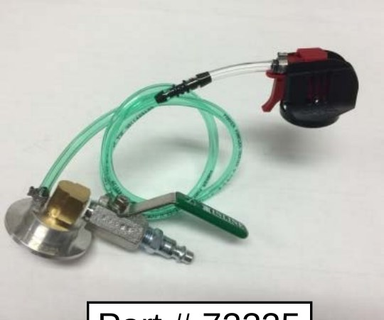
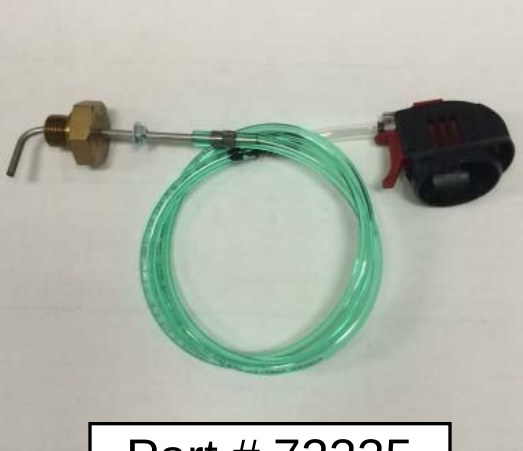
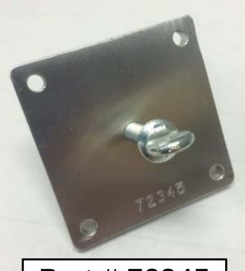
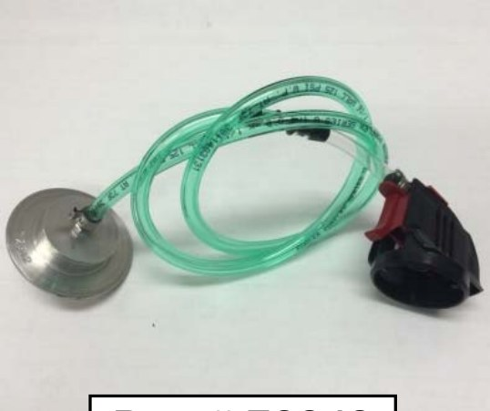

Doc no. MOC-TSB-14-20 // Vol. 14 No. 20 // Dec 3, 2014 // Fuel
EGR Tools for Dodge 6.7L Diesel Engines
New7234072325
MOC has developed 4 new tools, available as a complete kit (Part No. 72340) and individually (Part No. 72325, 72335, 72345, and 72342), to clean the Dodge 6.7L Diesel EGR valve and cooler. These tools are designed to be used with the MOC Optimizer™ Foaming Combustion Chamber & Emission System Cleaner (Part No. 16501, sold separately), and are easy to install for performing the service. Step by step user instructions are included with the kit.
What's new
Contact
For more information, contact the Machine & Equipment Department at 866.244.6621.




Part numbers
| Part No. | Description | Notes |
|---|---|---|
| 72340 | Complete kit | |
| 72325 | Dodge 6.7L EGR Valve & Cooler Cleaning Kit | |
| 16501 | Optimizer |